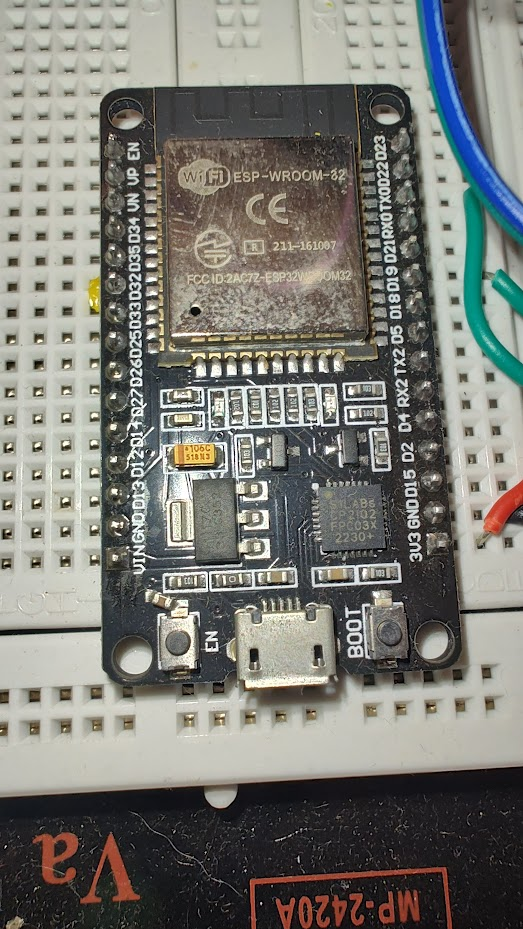
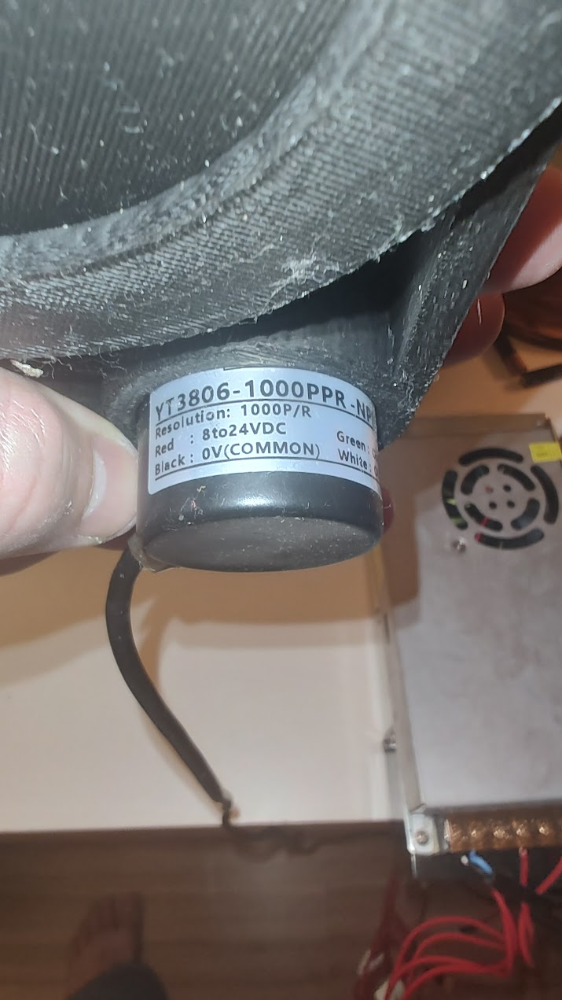
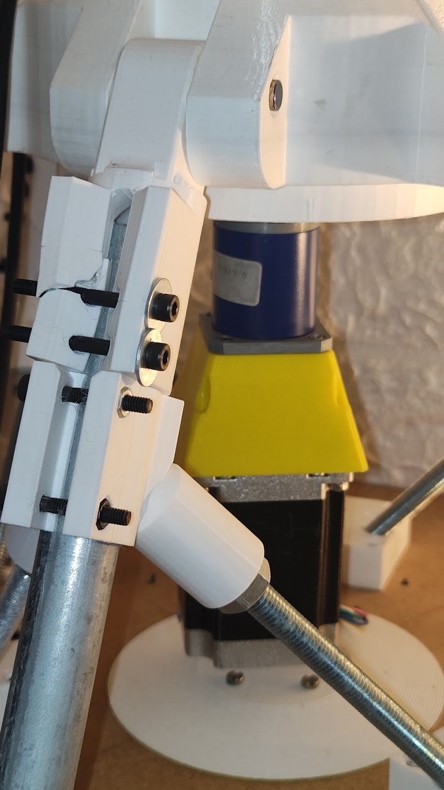
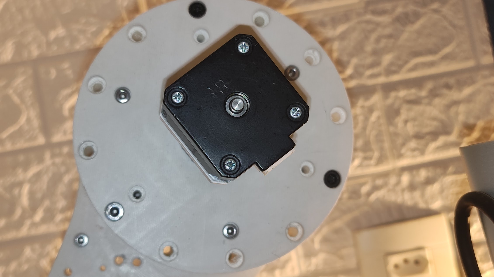

Replacing the Arduino Mega 2560 + two encoder Nanos + HC-05 + RTC with a single ESP-WROOM-32
telescope-arduino / main_sketch
This document is the complete reference for porting the mount controller firmware to a classic ESP32. It covers the hardware inventory, the wiring and schematics, the pin map, and every firmware change — enough to build and flash the new controller without re-deriving anything.
Today the mount is driven by three microcontrollers: an Arduino Mega 2560 plus two Arduino Nanos that do nothing but read one quadrature encoder each and stream the position over serial. Add-on modules handle Bluetooth (HC-05) and timekeeping (DS3231 RTC). The goal is to collapse all of that into one ESP-WROOM-32.
GreatGrandeurs Android app
connects exactly as it did to the HC-05 — no app changes.



| Component | Part | Interface | Fate in the port |
|---|---|---|---|
| Main MCU | Arduino Mega 2560 | — | ❌ replaced by ESP32 |
| Encoder readers ×2 | Arduino Nano | UART @57600 | ❌ deleted (PCNT) |
| Bluetooth | HC-05 | UART @9600 | ❌ on-chip radio |
| Clock | DS3231 RTC | I²C 0x68 | ❌ phone-set time |
| Encoders ×2 | YT3806 1000PPR NPN | quadrature A/B | ✅ kept → PCNT |
| Steppers ×2 | NEMA 17 + TB6600 | STEP/DIR | ✅ kept |
| IMU | MPU6050 | I²C 0x69 | ✅ kept |
| Displays | SSD1306 OLED ×2 | I²C | ✅ kept (LCD dropped) |
| Analog controls | 2 pots + 2 joysticks | ADC | ✅ → ADS1115 |
| Buttons / LEDs / laser | keypad + buttons | GPIO | ✅ → MCP23017 |
The left side is today's four-UART, three-MCU design. The right side is the consolidated ESP32: the two encoder UARTs become PCNT inputs, the Bluetooth UART becomes the on-chip radio, and all human-interface I/O collapses onto the single I²C bus.
Only the timing-critical signals stay on native GPIO; everything else is on I²C. The board below matches the 30-pin DOIT DevKit V1 silkscreen. Colors group signals by function.
0x78 / 0x7A jumper = 0x3C / 0x3D), so both OLEDs share the one I²C
bus. No second bus is needed and GPIO16/17 stay free as spares.| Function | GPIO | Type | Notes |
|---|---|---|---|
| STEP Vertical | 25 | output | to TB6600 PUL+ |
| DIR Vertical | 26 | output | to TB6600 DIR+ |
| STEP Horizontal | 32 | output | to TB6600 PUL+ |
| DIR Horizontal | 33 | output | to TB6600 DIR+ |
| ENC V A / B | 34 / 35 | input-only | PCNT, ext. 4.7 kΩ pull-up to 3.3 V |
| ENC H A / B | 36 / 39 | input-only | PCNT, ext. pull-ups |
| KNOB A / B | 27 / 14 | in | PCNT (menu rotary) |
| I²C SDA / SCL | 21 / 22 | bus | OLED×2, MPU, ADS1115, MCP23017 |
| Breathing LED | 13 | PWM | ledc |
| USB debug | TX0/RX0 | UART | flashing + logs |
| ENA V / H | 16 / 17 | output | driver enable (auto-disable idle) |
The YT3806 outputs are NPN open-collector: the transistor only pulls the line to 0 V; the high level is set by an external pull-up. That's what makes a 12 V-powered encoder safe for a 3.3 V MCU — pull the signal to 3.3 V, not to 12 V.
Resolution: 1000 PPR × 4 (quadrature decode) = 4000 counts/rev, matching the old
Encoder.read() behavior, so all downstream calibration/backlash math is unchanged.
One bus, five to six devices, no address collisions. Two 4.7 kΩ pull-ups to 3.3 V for the whole bus.
0x78 / 0x7A = 0x3C / 0x3D)
is set to 0x3D, so both OLEDs coexist on one bus.VCC (motors).V+, and feeds the 5 V reg.VIN.All grounds common: ESP32 GND, encoder Black/Shield, TB6600 GND, both PSU 0 V — else the open-collector encoder and STEP/DIR signals have no reference.
Power the I²C devices from 3.3 V so the bus idles at 3.3 V; at 5 V they would put 5 V on the ESP32 SDA/SCL and damage it.
– pins (PUL-, DIR-, ENA-) to GND and drive the
+ pins from the ESP32 — active-high STEP/DIR at 3.3 V, no 5 V common,
no DIR inversion. ENA is now wired per-axis (GPIO16/17) for auto-disable. At ≤7 kHz,
3.3 V opto drive is comfortable (74HCT125 buffer only as a fallback).| Ch | Signal |
|---|---|
| A0 | Horizontal pot |
| A1 | Vertical pot |
| A2 | Left joystick |
| A3 | Right joystick |
A software adapter scales the 16-bit reading into the
0–1023 range the existing translatePotValueToSpeed() expects, so that logic is
untouched. The unused SPEED_POT stays dropped.
| Chip | Lines |
|---|---|
| 0x20 inputs | keypad UP/DOWN/LEFT/RIGHT/SELECT + action, knob-push, L-joy, R-joy, enable-pot |
| 0x21 outputs | 4 status LEDs + laser + spare |
Two chips (split inputs/outputs) give comfortable headroom instead of one maxed 16/16 chip. The breathing LED needs PWM, so it stays native on GPIO13.
All three offload chips (ADS1115, MCP23017, and — if the LCD were kept — a PCF8574 backpack) are stocked by Brazilian retailers (Eletrogate, MakerHero, Curto Circuito, Usinainfo, RoboCore/FilipeFlop, Mercado Livre); no import required.
| File | Change |
|---|---|
platformio.ini | Board → esp32dev. Remove LiquidCrystal, Encoder, RTClib, SoftwareSerial, SPI. Add ESP32Encoder, Adafruit_ADS1X15, an MCP23017 lib. BluetoothSerial is built-in. Keep ArduinoJson, elapsedMillis, Adafruit_GFX/SSD1306, Ephemeris. |
MotorWithEncoder.* | Biggest change. Drop HardwareSerial*, updateEncoderFromSerial(), the 8-byte bit-decoder and both buffers. Add an ESP32Encoder member; readEncoderPosition() → getCount(). Keep the direction + backlash state machine, fed from the new count. |
| encoder Nano sketches | Deleted (both). |
other_android.ino | Serial1/HC-05 → BluetoothSerial. Re-enable the currently-commented RX (bluetoothSerialAvailable()) and TX (reportBluetooth()). JSON command set + telemetry keys unchanged. |
other_time.ino | Drop rtc.now(). Base time from the phone time command + millis() offset. Optional NTP-over-WiFi fallback. |
other_lcd.ino | Reimplement printLcd* / renderMenuOptions against Adafruit_GFX on OLED #2. registerButton() reads MCP23017 (keypad now 5 discrete buttons, not a ladder). Menu flow unchanged. |
other_oled.ino | Stays — OLED #1 sky map. |
Globals.hpp | Full pin-map rewrite to §4; remove RTC/LCD/serial-encoder globals. |
main_sketch.ino | setup(): init ESP32Encoder ×3, ADS1115, MCP23017, BluetoothSerial, 2× SSD1306; remove RTC / Serial1-2-3. Loop timer structure unchanged. |
Astronomy math (calculateEverything, Ephemeris — now with true 64-bit doubles),
the calibration flow, the backlash-compensation algorithm, the star catalog, and the
entire Bluetooth JSON protocol. The Android app needs no changes.
Preferences so calibration survives power-off. Recommended, deferrable.0x78/0x7A jumper.printLcd* helpers.